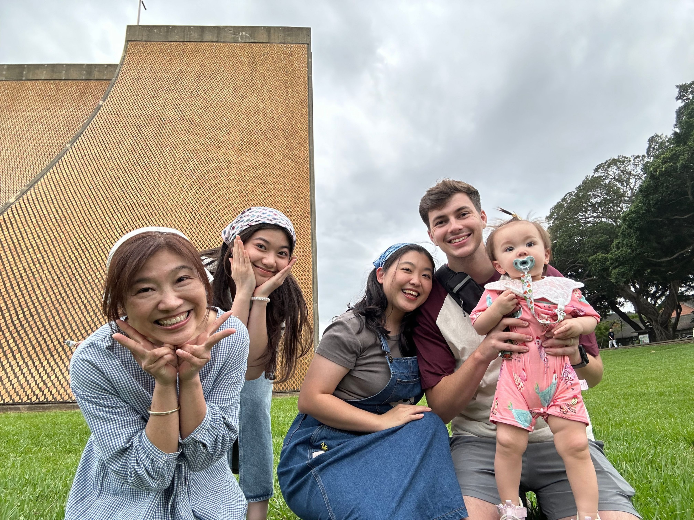

Hi! I'm Misha
I'm a Cybersecurity student at BYU–Idaho who enjoys learning about technology and building things with it. I'm from Taiwan, a country in East Asia. It's a beautiful place with lots of delicious food and many interesting places to visit. In my free time, I like finding different movies to watch, and my favorite genre is romantic comedy. I enjoy watching movies because they give me a chance to relax and have fun during my free time. Sometimes, I spend quite a while trying to find a good movie to watch! In this portfolio, you can find all the projects I've worked on for my web development class so far. I'll continue adding more projects as I learn new things and improve my skills throughout the class. I hope you enjoy looking through my projects and getting to know a little more about me. Thanks for visiting my portfolio!